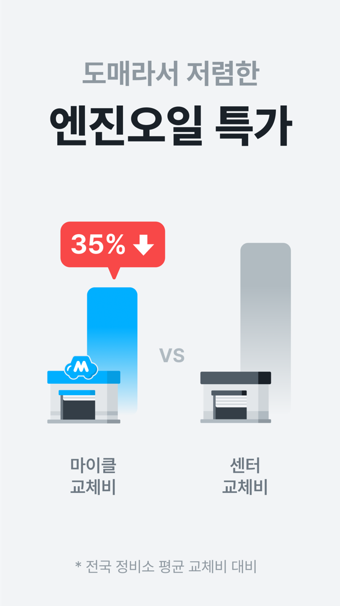
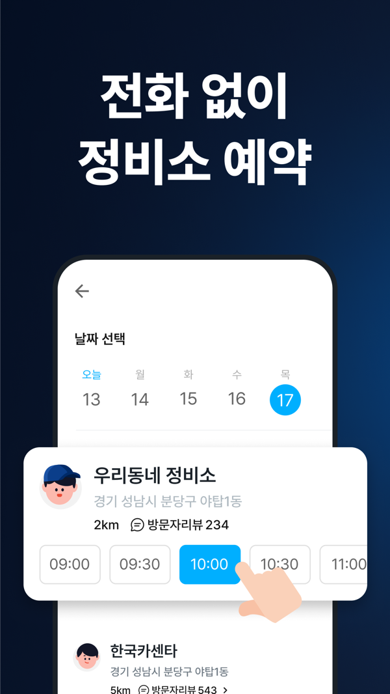

직접 써 보며 찾은 문제 8개를 공개 자료로 검증했습니다. 이 문제를 5개 파트로 묶어 해결 방법과 기대 효과를 정리했고, 마지막에 제가 이 일을 해야 하는 이유를 담았습니다.
| P1 첫 가치 7일 | 가입 → 첫 활성화 시퀀스 | 126 |
| P2 선택 확신 | 정비소 카드에 확정가·추천 이유 | 3 |
| P3 교체 시점 CRM | 교체 예정일 × 카카오 채널 | 4 |
| P4 맞춤 홈·세그먼트 | "지금 할 일" 카드 | 57 |
| P5 레퍼럴 | 만족 고객의 양쪽 보상 추천 | 8 |
한 줄: 마이클은 교체 주기·주행거리·정비 이력을 이미 갖고 있습니다. 이 데이터를 고객별 메시지·화면·추천으로 바꾸는 것이 이번 제안의 전부입니다.
정비소 수는 2024년 기사(약 450곳)와 차이가 큽니다. 차량 등록 수는 공고마다 770만·850만으로 다릅니다.
왜 마이클인지, 어떻게 쓰는지 잊힘
첫 가치까지 걸리는 일수를 모름
고를 이유(가격·추천)가 안 보임
교체 데이터가 메시지·홈으로 안 이어짐
추천할 장치가 없음
소모품 교체 주기, 주행거리(현대·기아 커넥티드), 주유·정비 기록, 차량번호 기반 리콜·보험 이력
앱푸시, 카카오 로그인·채널 추가 상태 수집, 결제 요청 알림톡
데이터 → 고객별 메시지·홈 화면·추천 동기. 지금은 모두에게 같은 경험입니다.
| # | 제기한 문제 | 판정 | 근거 |
|---|---|---|---|
| 1 | 온보딩에 "왜 마이클인가"가 없고, 가입 후 CRM이 안 보임 | 부분 맞음 | 웰컴 혜택(첫 엔진오일 1만원)은 있음. 가입 후 시퀀스 흔적은 없음 |
| 2 | 가입 후 서비스와 사용법이 기억에 안 남음 | 검증 불가 | 업데이트 노트가 한 줄뿐이고, 기능 안내 콘텐츠를 찾지 못함 |
| 3 | 정비소·상품 선택 때 리뷰·가격 우위가 안 보임 | 부분 맞음 | 광고는 "센터 대비 35%↓"를 말하지만, 선택 카드에는 거리·리뷰 수만 있음 |
| 4 | 교체 예정 데이터를 CRM에 못 씀. 카카오 채널 미활용 | 맞음 | 알림톡은 현장 추가정비 결제 요청에만 명시. 채널 추가 상태는 수집 중. 교체 안내는 푸시만 |
| 5 | 홈 화면이 고객별로 같음 | 검증 불가 | 실사용 관찰 기준. 외부에는 홈 개인화 자료가 없음 |
| 6 | 첫 활성화까지 일수를 줄이는 장치가 없음 | 부분 맞음 | 첫 예약 할인과 차량번호 자동 조회는 있음. 단계별 리마인드는 흔적 없음 |
| 7 | 페르소나·코호트·유입 경로별 액션이 안 보임 | 검증 불가 | 채용공고가 "정비 주기·이용 행동 맞춤 메시지"와 "첫 정비 예약 여정 개선"을 과제로 명시 → 회사도 인지한 과제 |
| 8 | 레퍼럴이 UX에 안 보임 | 맞음 | 스토어·웹·개인정보처리방침 어디에도 추천인·친구 초대 항목이 없음 |
판정 기준: App Store, 개인정보처리방침, 채용공고, 리뷰 같은 공개 자료입니다. 앱 내부 화면은 실사용 관찰입니다. "검증 불가"는 틀렸다는 뜻이 아니라, 외부에서 확인할 수 없다는 뜻입니다.
웰컴 쿠폰(첫 엔진오일 1만원)은 있지만, 가입 뒤 "왜 마이클인가"와 "어떻게 쓰나"를 다시 알려주는 흐름이 보이지 않습니다. 첫 활성화까지 걸리는 일수도 관리 지표로 보이지 않습니다.
리콜·보험 이력과 다음 교체 예상일을 바로 보여줍니다. 첫 가치를 첫 세션 안에 줍니다.
내 차 숫자로 가치를 다시 증명합니다.
등록을 미룬 사람만 대상으로 합니다.
주유 자동 기록, AI 정비상담, 월간 리포트. 완료하면 배지를 줍니다.
첫 예약 쿠폰 만료 전에 알립니다. 교체 예정일이 가까운 사람부터 보냅니다.
활성화를 2단계로 정의합니다. 1차는 차량 등록과 교체 예정일 확인, 2차는 첫 예약입니다. 그다음 가입 → 활성화 일수의 중앙값을 유입 경로별 코호트로 매주 봅니다.
시퀀스는 받는 그룹과 받지 않는 그룹(10%)으로 나눠 비교합니다. 판정 지표는 7일 등록률과 30일 첫 예약률입니다. 푸시 수신거부율을 함께 봐서 메시지 피로를 막습니다.
첫 활성화까지의 일수를 단축하고, "할인 앱"이 아닌 "내 차 관리 앱"이라는 첫인상을 심습니다. 이후 모든 CRM이 이 인식 위에서 작동합니다.

광고: 35%↓스토어 광고는 가격 우위를 강조

선택 화면고르는 화면에는 거리·리뷰 수만
정작 결정하는 순간에는 가격 우위와 "왜 이 정비소인가"가 사라집니다. 리뷰에서도 "추가 비용 때문에 다음엔 센터로 가겠다"는 이탈 신호가 나옵니다.
"설명이 친절하고 추가 정비를 강요하지 않아요" — 리뷰 요약
목록 → 예약 전환율이 오르고, "추가 비용" 불만이 줄어듭니다. 실험은 기존 카드와 개편 카드를 A/B로 비교합니다.
개인정보처리방침에서 알림톡은 "현장 추가정비 결제 요청"에만 명시되어 있습니다. 카카오톡 채널 추가 상태는 이미 수집합니다. 그런데 교체 안내는 앱푸시로만 합니다. 데이터와 채널이 모두 있는데 연결되지 않은 상태입니다.
| 시점 | 채널 | 메시지 성격 | 예시 |
|---|---|---|---|
| D-30 | 앱푸시 + 홈 카드 | 정보 안내 | "부동액 교체 예정일까지 30일" |
| D-7 | 카카오 브랜드 메시지 채널 친구·수신 동의자 | 혜택 포함 | 확정가와 가까운 정비소 3곳, 이번 주 예약 혜택 |
| 교체일 경과 | 알림톡 | 정보 안내만 광고 문구 금지 | "교체 예정일이 지났어요. 점검 이력 확인하기" |
| 계절 | 푸시 + 브랜드 메시지 | 시즌 점검 | 11~12월 배터리·부동액, 설 전 장거리 점검 |
D-7 브랜드 메시지 목업 (금액·날짜는 예시)
푸시를 끈 고객에게도 닿아 도달률이 오르고, 차량번호·예정일이 들어간 문구로 클릭률이 오릅니다. 핵심 지표(교체 도래 차량의 30일 예약률)를 직접 움직이는 파트입니다.
홈 화면이 고객 상태와 관계없이 같습니다(실사용 관찰). 페르소나·유입 경로별 액션도 보이지 않습니다. 채용공고에 "정비 주기·이용 행동 맞춤 메시지"가 과제로 올라 있어, 회사도 알고 있는 빈칸입니다.
| 상태 | 카드 |
| 차량 미등록 | 차량번호 등록 |
| 교체 D-30 이내 | 예약하기 |
| 정비 완료 D+1 | 결과 리포트·리뷰 |
| 60일 비활성 | 월간 리포트 요약 |
| 세그먼트 | 판별 데이터 | 홈·CRM 액션 |
|---|---|---|
| 출퇴근 다주행 | 커넥티드 연동, 월 주행 1,500km 이상 | 주행거리 기반 교체 알림을 빠른 주기로 |
| 가족차 저주행 | 연 정비 1~2회 | 계절 점검 위주. 알림은 적게 |
| 가격 탐색형 | 쿠폰 사용 비율이 높음 | 쿠폰 대신 확정가·절약액 메시지 테스트 |
| 관리 초보 | AI 정비상담 이용, 기록 적음 | 기능 학습 체크리스트, 상담 → 예약 연결 |
| 유입 경로별 | AppsFlyer 미디어 소스 | 특가 광고 유입은 즉시 예약형, 커넥티드 유입은 기록형, 블로그 유입은 학습형 온보딩 |
홈 → 다음 행동 전환율과 세그먼트별 재예약률이 오릅니다. 같은 예산으로 "누구에게 무엇을"이 정해져, CRM 발송량이 아니라 발송 효율이 커집니다.
스토어, 웹, 개인정보처리방침 어디에도 추천인·친구 초대 항목이 없습니다. 믿을 만한 정비소를 찾는 일은 입소문이 강한데, 그 입소문을 앱 안에서 받을 장치가 없습니다.
정비 완료
만족 4점 이상
"이 정비소 추천" 링크 공유
친구 첫 예약 시 둘 다 5천원
결과 리포트를 공유하면 친구에게는 "검증된 정비소"가 되고, 정비소에는 새 고객이 됩니다.
가족 차를 등록해 초대하면 교체 알림을 보호자에게도 보냅니다. 차가 여러 대인 사용자의 기록 오류도 함께 정리합니다.
다차량 등록보호자 알림만족 4점 이상인 고객에게만 노출합니다. 품질 문제가 남은 채로 유입만 늘면 불만도 함께 커지기 때문입니다.
Dropbox는 초대한 사람과 받은 사람 모두에게 보상하는 레퍼럴로 15개월 동안 가입자가 약 10만에서 400만으로 늘었습니다. 다만 인과는 단정할 수 없습니다.
초대 경유 가입의 CAC가 유료 광고보다 낮아지고, 추천받은 고객은 처음부터 신뢰를 갖고 들어옵니다. 지표는 K-factor와 초대 경유 첫 예약률입니다.
측정 없이 실험하면 무엇이 효과였는지 남지 않습니다. 교체 시점 CRM은 개발 의존이 적고 핵심 지표를 바로 움직입니다.
11~12월은 배터리·부동액 수요가 몰리는 시기입니다. 겨울에는 배터리 성능이 20~30% 떨어집니다.
모든 실험에 대조군 10%를 둡니다. 가드레일은 푸시 수신거부율입니다. 광고성 메시지는 야간(21시~08시)에 보내지 않습니다.
월 10만 대 [가정]
PART 3 · 카카오 채널 추가
PART 3·4 · 내 차 문구, 맞춤 홈
PART 2 · 확정가, 추천 이유
| 항목 [가정] | 현재 (푸시 중심) | 제안 후 |
|---|---|---|
| 도달률 | 40% | 75% |
| 클릭률 | 5% | 7% |
| 예약 전환율 | 10% | 14% |
| 월 예약 (10만 대 기준) | 200건 | 735건 |
가입 → 첫 활성화 일수 중앙값 (PART 1)
90일 재예약률, 세그먼트별 (PART 4)
K-factor, 초대 경유 CAC (PART 5)
| 마이클의 과제 | 제가 해 본 일 | 결과 |
|---|---|---|
| 교체 시점 CRM 4 | 모요: 고객이 요금제를 바꿀 시점(할인 만료 30일 전 등)에 맞춰 보내는 자동화를 새로 만듦 | 단발성 발송 대비 CPA 약 4.5배 낮춤 |
| CRM 운영 확장 | 모요: 인수인계 없이 CRM을 혼자 맡아 4개 사업부로 확장. 자동화 여정 25개 신규 | 월 발송 일정 2.4배(8 → 19건) 3분기 CRM 경유 접수 +41% |
| 재예약·휴면 57 | 커버링: 등급제와 휴면 고객 7,997명 재활성화 CRM | CRM 추가 매출 12.3억 등급제 LTV 18.1배 |
| 첫 가치·소구점 13 | 커버링: 소구점을 다시 찾아 앱 월 매출을 4,520만에서 17.6억으로 키움 | CPI −72.8%, 월 매출 40배 |
| 측정·코호트 67 | 모요: 측정되지 않던 CRM 성과를 보이게 하는 체계. BigQuery로 회차별 사후분석(구성 효과와 성능 효과 분해) | 사업부가 CRM 성과를 직접 확인 |
| 카카오 채널 4 | 알림톡·브랜드 메시지·앱푸시·이메일 4개 채널 운영. 알림톡 심사 기준과 광고성 구분에 익숙함 | 누구나 CRM을 세팅할 수 있는 셀프 세팅 키트를 팀에 배포 |
요약: 저는 "데이터는 있는데 쓰이지 않던 CRM"을 시점 기반 자동화로 바꿔 본 사람입니다. 모요의 "요금제 바꿀 시점"과 마이클의 "부품 바꿀 시점"은 같은 문제입니다.